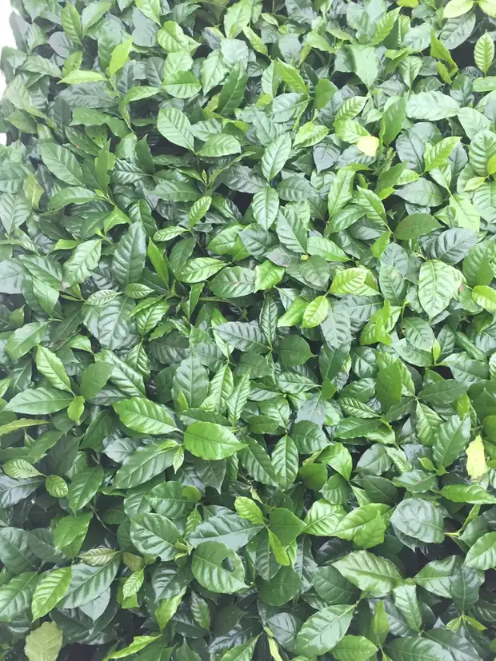
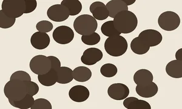
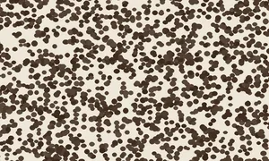
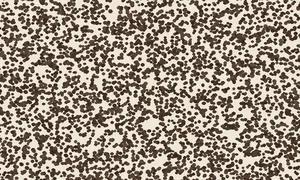

Grind
Find your grind.
Grind size decides how fast water pulls flavour out of the coffee. Get it wrong and no amount of good bean will save the cup.
The whole spectrum
From peppercorns to flour.
The finer the grind, the more surface area the water meets, and the faster it extracts. Too fine turns bitter. Too coarse stays weak and sour.
| Grind | Brew with | Feels like |
|---|---|---|
 Extra coarse |
Cold brew | Peppercorns |
| Coarse | French press | Sea salt |
| Medium–coarse | French press, Chemex | Coarse sand |
| Medium | Pour over, Indian filter, moka pot | Beach sand |
| Medium–fine | AeroPress | Fine sand |
 Fine |
Espresso | Caster sugar |
 Extra fine |
Turkish | Flour |
Not sure?
Start at medium and adjust one step at a time.
If the cup tastes thin and sour, go finer. If it tastes bitter and drying, go coarser. Change one thing per brew or you will not know what fixed it.